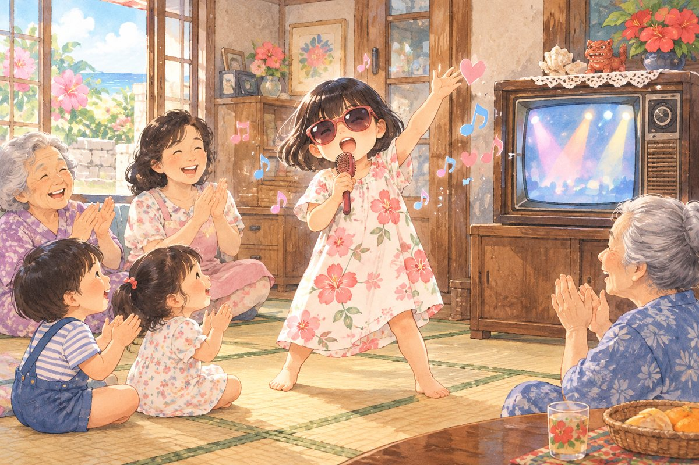
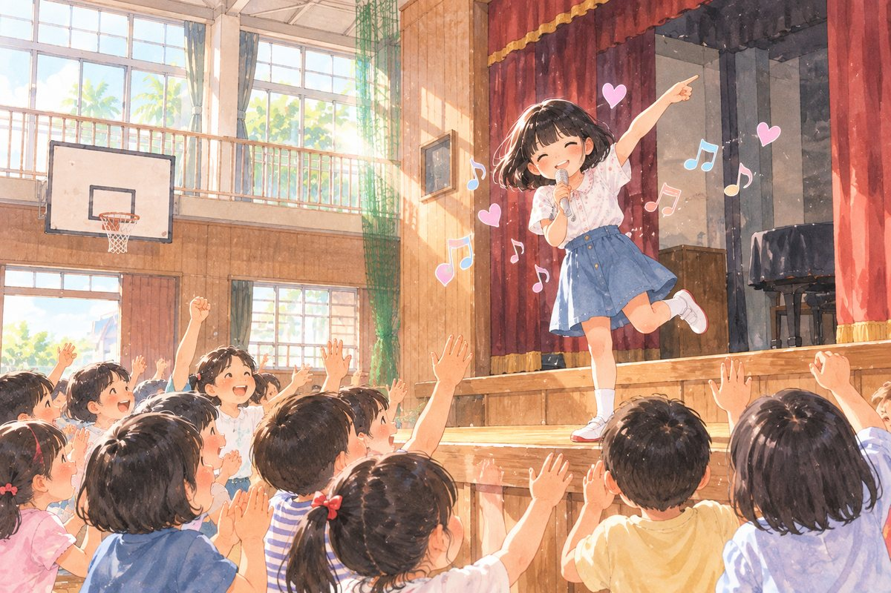
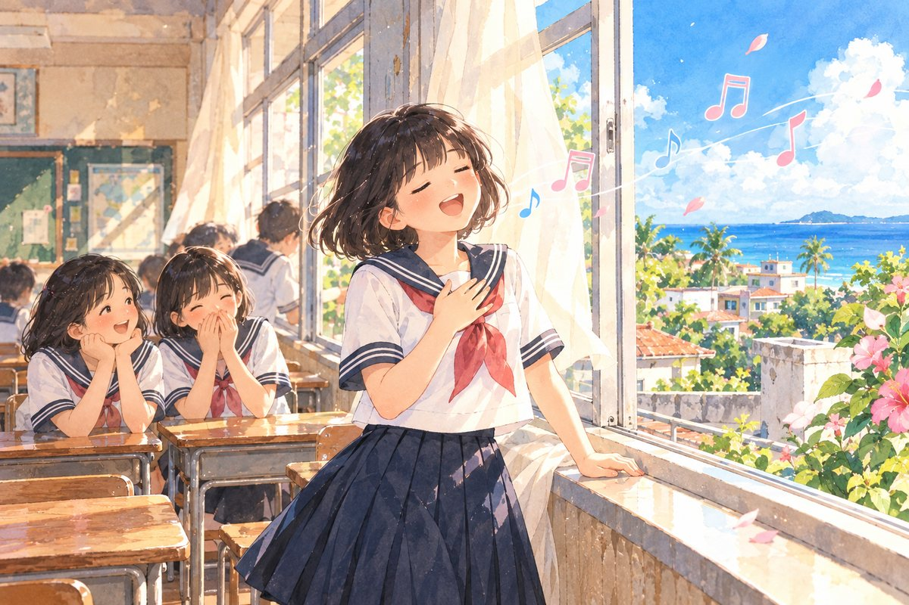
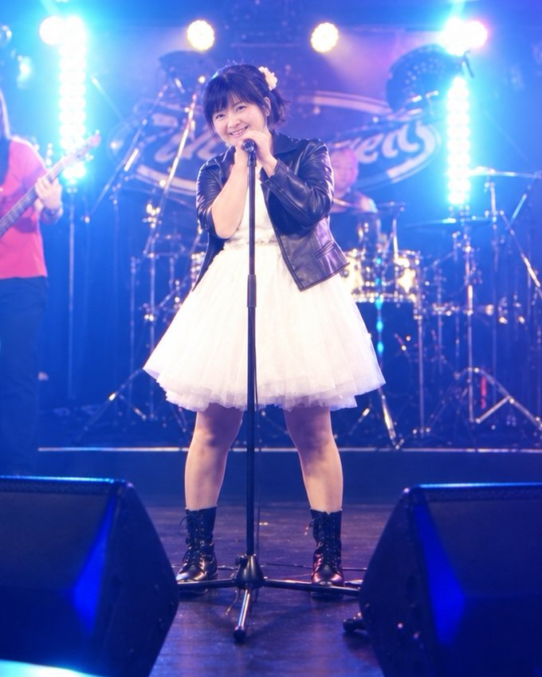
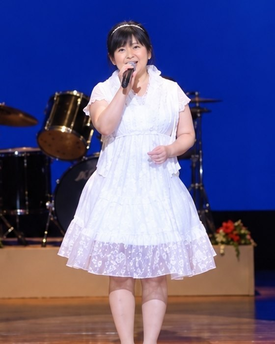
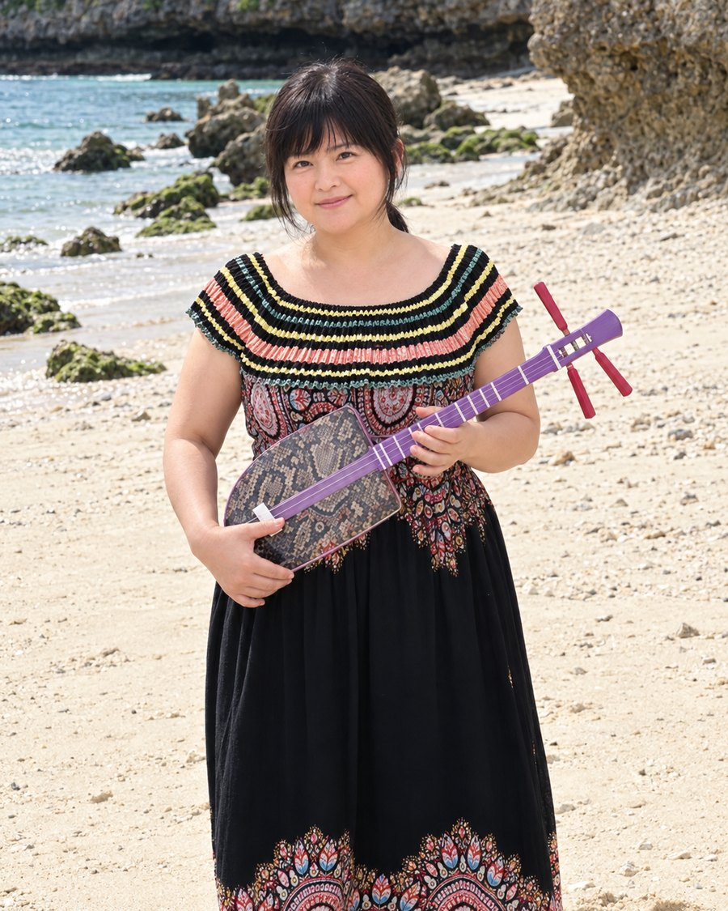

Story
あゆなの、
シンガーへの目覚め
テレビの前のリサイタルから、はじめてのステージまで。ご本人が書き留めた言葉をもとにお届けします。
-

幼稚園のころ
ムームーとサングラスで、
テレビの前のリサイタルテレビでは毎日のように、歌手の方が大きなステージから客席に向けて思いっきり歌う姿を、カメラが背中側から映していました。
毎日観ているうちに、「私、これ、やりたい！」と思うようになりました。
当時のアイドルグループがテレビで歌っていると、なぜか寝巻きのムームーにサングラスをかけ、近所の皆さんを呼んで、テレビの前でリサイタルをしていました。シンガーに目覚めたのは、このときです。
-

小学生のころ
お昼休みの体育館で、
ファン役10名の前のライブたのきんトリオ、松田聖子さん、河合奈保子さん、柏原芳恵さんがデビューし、山口百恵さんがちょうど引退されたころ。ふたたびアイドル歌手に目覚めて、友達とアイドルごっこをして遊んでいました。
学校では、お昼休みの体育館で、お友達10名がファン役になってライブ。なぜか全部、河合奈保子さんの歌を歌っていました（笑）
-

中学生のころ
休み時間は、
教室の窓から歌の練習今ではちょっと照れるのですが、休み時間になると、教室の窓から河合奈保子さんの歌を歌って練習していました。
-
高校生のころ
17歳、スカウトキャラバンへ
17歳でホリプロスカウトキャラバンに応募して、一次審査に合格。でも、二次審査の会場が福岡だったので、断念しました。
大学生のころ
憧れは、胸の中に
現代音楽サークルと英語サークルに入っていました。浜田麻里バンドに憧れていましたが、勇気が出ず、実行できませんでした。
-

写真は近年のステージです 大人になって
「本部の松田聖子」から、
はじめてのステージへ会社を代表して、よく歌で出場していました。「本部の松田聖子」とよく言われていて、聖子ちゃんの歌のリクエストがたくさんありました。
聖子ちゃんを歌っているうちにシンガーに憧れて、ボイストレーニングを受けることに。そこでは年に1回、プロのバンドの皆さんの演奏で、北谷町の LIVE HOUSE MOD's に立ち、ボーカルとして松田聖子さんの曲を歌ってきました。私の最初のステージは、LIVE HOUSE MOD's が始まりです。
-

そして
沖縄本島の、
あらゆる場所へそこから、沖縄本島のあらゆる場所で歌わせていただけるようになりました。
はじめの10年は松田聖子さんの曲だけを。11年目からは、聖子さんの曲に加えて80年代のアイドルの曲や沖縄の歌も歌うようになり、歌える世界が広がりました。
-

2025年11月〜いま
ウクレレとサンレレで、
シマ歌も2025年の11月からウクレレを習いはじめ、歌いながら弾けるようになりました。サンレレも習いはじめ、いまはシマ歌も弾き語ります。
ラジオでは番組を担当し、子どもたちには英語を教えています。